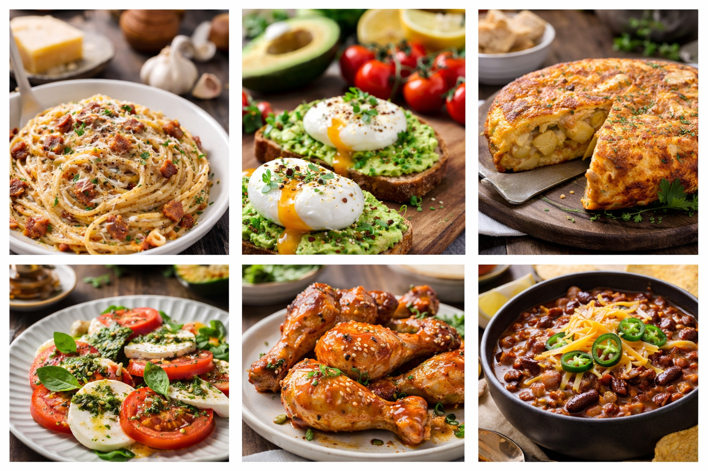

Inicio
Bienvenid@ a Maríu · Recetas caseras: cocina real, de diario y sin complicaciones. Aquí encontrarás ideas rápidas entre semana, platos de cuchara, cenas ligeras y algún capricho de postre.
Mi objetivo es que cocines más en casa sin perder tiempo: recetas claras, ingredientes fáciles y trucos que funcionan.
Sobre Maríu
Soy María y me encanta la cocina casera de toda la vida, pero adaptada al ritmo de hoy. Me gusta enseñar recetas que salen bien a la primera, con pasos simples y resultados con buena pinta.
- Recetas prácticas: pensadas para hacer con lo que tienes en casa.
- Trucos útiles: tiempos, puntos de cocción y sustituciones sencillas.
- Variedad: carne, pescado, verduras y postres caseros.
Noticias
Suscríbete
Si quieres recibir una receta nueva cada semana y una lista de la compra lista para usar, suscríbete. Cero spam: solo ideas de cocina y trucos rápidos.